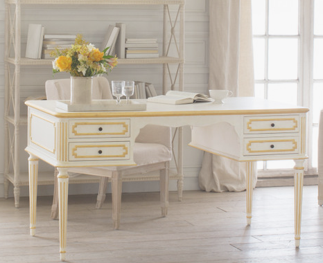

¡Lo vintage está de moda!
¿Querés devolverle la vida a esos muebles de la abuela que te parecen que ocultan algo lindo? ¿Querés decorar tu casa con un estilo antiguo? Back in Time abre sus puertas. Descubrí todos los servicios que tenemos para vos.
